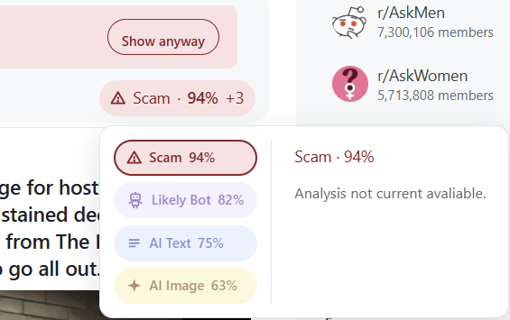
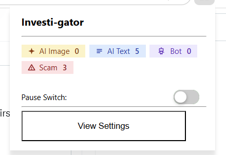

Investi-gator is a Chrome extension that passively reads posts on social media platforms as they load, badging posts that contain AI-generated images and text, are likely bot accounts, and/or are potentially scams without you lifting a finger.
What it detects
As posts enter your feed, Investi-gator runs multiple light local detectors in the background for each post, generating badges for any post that exibits any of the four detection types below, along with confidence and reasoning.
Analyzes images attached to posts and flags those created by generative models.
Scores post text for machine-written patterns, helping you tell authentic voices from synthetic ones.
V1 of the detector was trained on samples from liamdugn/raid and yaful/MAGE on Hugging Face covering genres ranging from reddit posts, news, reviews and more.
Weighs account signals to estimate whether the poster is an automated or inauthentic account.
Recognizes scam, phishing, and spam patterns in posts and comments so you can avoid them before engaging.
V1 of the detector was also trained on 13 different types of social media scams/spam involving engagement farming spam, fake giveaways, fake hiring posts, impersonation, crypto pumps, and more.
Quick and Easy
No need to manually turn on, paste text, or upload images. Investi-gator checks your feed automatically and evaluates each post the moment it appears while quietly badging ones deemed suspicious.
Beneath the surface
A content script watches the social media feed and reads new posts as they render passively.
Each post's text and media are passed to the local models for analysis where they return it's classification and confidence for each type.
If a local model give a low enough confidence score for a detection type, a heavier cloud model for that type is called to classify the post.
Any positive detection that is allowed by the user's personal settings and Investi-gator's requirements are badged and displayed along with the confidence
When you click on a badge, the content scripts requests the reasoning for the positive detection for each type. This can range from LIME, SHAP, Grad-CAM, or heatmaps depending on the detection type.
From hiding high confidence posts to custom confidence requirements for badges to appear, Investi-gator contains many adjustable settings allowing you to use Investi-gator your way.
See it in action
Below is the current state of the extension popup, badge/badge-popup, and runtime.


Built with